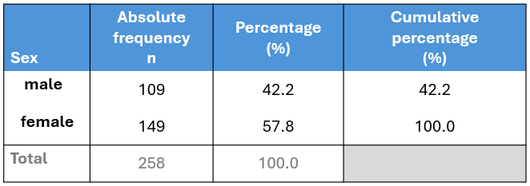
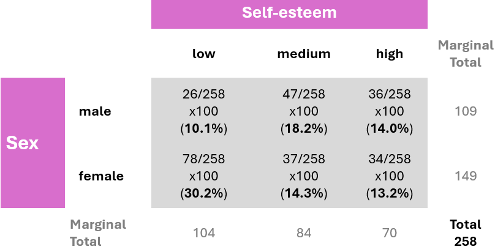
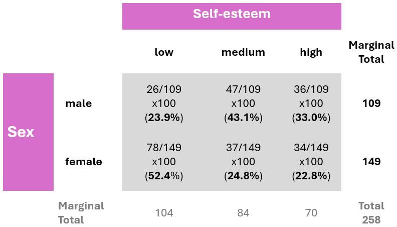

2 Descriptive statistics
When we have finished this chapter, we should be able to:
2.1 Data
We will explore a dataset containing 258 participants (rows) and 8 variables (columns). The variables include sex (female/male), age (in years), time spent on the internet and social media (in hours), the total score (0-30) from responses to 10 questions on the Rosenberg Self-Esteem Scale (RSES), and the categorization of that score into three levels of self-esteem: low (0-15), medium (16-19), and high (20-30) (García et al. 2019).
2.2 Summarizing categorical data (Frequency Statistics)
2.2.1 One variable frequency tables and plots
The first step in analyzing a categorical variable is to count the occurrences of each label and calculate their frequencies. This collection of frequencies for all possible categories is known as the frequency distribution of the variable. Additionally, we can express these frequencies as proportions of the total number of observations, which are referred to as relative frequencies. If we multiply these proportions by 100, we obtain percentages (%).
Sex variable
Let’s create a a frequency table for the sex variable:

The table displays the following:
Absolute frequency (n): The number of participants in each category (male: 109, female: 149).
Percentage (%): The proportion of participants in each category relative to the total number of participants (relative frequency) multiplied by 100% (male: 109/258 x 100 = 42.2%, female: 149/258 x 100 = 57.8%). Note that the percentages sum up to 100% (42.2% + 57.8%).
Cumulative percentage (%): The sum of the percentage contributions of all categories up to and including the current one. For example, for the male category, the cumulative percentage is 42.2%. When combining male and female categories, the cumulative percentage is 42.2% + 57.8% = 100%. Therefore, the final cumulative percentage must equal 100%.
While frequency tables are extremely useful, plotting the data often provides a clearer presentation. For categorical variables, such as sex, it is straightforward to display the number of occurrences in each category using bar plots. The x-axis typically represents the categories of the variable—in this case, “male” and “female”. The y-axis represents the frequency or count of occurrences for each category.
If the y-axis represents percentages (%), then each bar’s height corresponds to the percentage of participants in that category. For example, the percentage of female participants is 57.8%.
Score_cat variable (self-esteem)
Similarly, we can create the frequency table for the Score_cat (self-esteem) variable:
In the above table, we observe that 40.3% (104 out of 258) of participants have a low level of self-esteem. When we combine the low and medium categories, the cumulative percentage is: 40.3% + 32.6% = 72.9%. Finally, for all categories (low, medium, high), the cumulative percentage sums to 72.9% + 27.1% = 100%.
Figure 2.5 illustrates the frequency distribution of self-esteem. The horizontal axis (x-axis) displays the different self-esteem categories, ordered according to increasing self-esteem levels, while the vertical axis (y-axis) shows the frequency of each category.
Figure 2.6 illustrates the distribution of self-esteem using percentages. Most participants fall into the category of low self-esteem, accounting for 40.3% (172 out of 428), highlighting a significant portion of the sample that may benefit from targeted interventions or support.
Tips for simple bar plots
- All bars should have equal width and equal spacing between them.
- The height of each bar should correspond to the data it represents.
- The bars should be plotted against a common zero-valued baseline.
2.2.2 Two variable tables (Contingency tables) and plots
A. Frequency contingency table
In addition to tabulating each variable separately, we might also be interested in exploring the association between two categorical variables. In this case, the resulting frequency table is a cross-tabulation, where each combination of levels from both variables is displayed. This type of table is called a contingency table because it shows the frequency of each category in one variable (e.g., sex), contingent upon the specific levels of the other variable (e.g., self-esteem), as shown in Figure 2.7.
Note: The table also typically includes row and column totals, also known as marginal totals, that sum the counts for each row and column, respectively.
B. Joint distribution contingency table
A joint distribution contingency table displays both the frequency of observations across categories of two variables and the percentage distributions of those frequencies. The percentages are calculated by dividing the frequency in each cell by the overall total (258), then multiplying the result by 100. This shows the percentage of the total observations that fall into each category combination.

C. Conditional distribution contingency table
Suppose we are interested in the distribution of self-esteem levels within each sex group, meaning we are observing how self-esteem vary among males and among females. By conditioning on sex, we divide each cell’s frequency by the corresponding row total (row marginal total), rather than the overall total. This method allows us to examine the conditional distribution of self-esteem within each sex group. For example, the percentage of participants with low self-esteem, given that the participant is female, is calculated as (78/149) x 100 ≈ 52.4%.

This data analysis indicates notable differences in self-esteem levels between male and female participants. Specifically, the percentage of female participants with low self-esteem (52.4%) is substantially greater than that of male participants (23.9%).
We can also graphically present the data in the table shown in Figure 2.9. A side-by-side bar plot (Figure 2.10) can facilitate easier visual comparisons.
Alternatively, we can create a stacked bar plot, where the bars are segmented by self-esteem levels. Figure 2.11 illustrates a 100% stacked bar plot, which displays the percentage of each self-esteem level (low, medium, high) among male and female participants, emphasizing the relative differences within each group. For example, the plot shows that a higher proportion of females have low self-esteem (52.4%) compared to males (23.9%), while males have a higher proportion of medium (43.1%) and high self-esteem (33%) compared to females.
Caution
One consideration when using stacked bar plots is the number of variable levels: with many categories, stacked bar plots can become confusing.
2.3 Summarizing numerical data (Summary Statistics)
Summary measures are single numerical values that summarize a set of data. Numeric data can be described using two main types of summary measures (@tbl-measures).
Measures of central location: These describe the “center” of the data distribution. Common examples include the mean, median, and mode.
Measures of dispersion: These quantify the spread of values around the central value. Examples include the range, interquartile range (IQR), variance, and standard deviation.
| Measures of Central Location | Measures of Dispersion |
|---|---|
| • Mean | • Variance |
| • Median | • Standard Deviation |
| • Mode | • Range (Minimum, Maximum) |
| • Interquartile Range (1st and 3rd Quartiles) |
Additionally, measures of shape such as the sample coefficients of skewness and kurtosis provide further insights by revealing the overall shape and characteristics of the distribution.
2.3.1 Measures of central location
A. Sample Mean or Average
The arithmetic mean, or average, denoted as \(\bar{x}\), is calculated by dividing the sum of all values in a set by the total number of values in the set.
\[\bar{x}= \frac{Sum \ of \ values}{Number \ of \ values} \tag{2.1}\]
Example
We subset the data to a smaller sample to make it easier to manually calculate the summary measures. As an example, we will use the number of hours per day spent on the internet by 15-year-old females with low self-esteem, which are as follows:
\[ 5 \ \ \ \ \ 4 \ \ \ \ \ 12 \ \ \ \ \ 8 \ \ \ \ \ 4 \]
To calculate the mean, we use the Equation 2.1:
\[\bar{x} = \frac{5 + 4 + 12 + 8 + 4}{5} = \frac{33}{5} = 6.6 \ hours\]
To highlight how outliers affect the mean, suppose we add a value of 24 to the dataset. This new data point is considered an outlier, as it is substantially higher than the other values in the dataset. Since 24 hours is the maximum possible in a single day, this extreme value clearly stands out from the rest of the observations.
Our new dataset becomes:
\[ 5 \ \ \ \ \ 4 \ \ \ \ \ 12 \ \ \ \ \ 8 \ \ \ \ \ 4 \ \ \ \ \ \underline{24}\]
We can determine the new mean, \(\bar{x}_{new}\), by adding up all six values and dividing by six:
\[\bar{x}_{new}= \frac{5 + 4 + 12 + 8 + 4 + 24}{6} = \frac{57}{6} = 9.5 \ hours\]
After adding this outlier, the mean increased from 6.6 to 9.5. This significant rise of 2.9 hours illustrates how outliers can distort the average, making it less representative of the dataset.
Advantages of mean
- It uses all the data values in the calculation and is the balance point of the data.
- It is algebraically defined and thus mathematically manageable.
Disadvantages of mean
- It is highly influenced by the presence of outliers—values that are abnormally high or low—making it a non-resistant summary measure.
- It cannot be easily determined by simply inspecting the data and is usually not equal to any of the individual values in the sample.
B. Median of the sample
The sample median, denoted as md, is an alternative measure of location that is less sensitive to outliers than mean.
The median is calculated by first sorting the observed values (i.e. arranging them in an ascending or descending order) and selecting the middle one. If the number of observations is odd, the median corresponds to the number in the middle of the sorted values. If the number of observations is even, the median is the average of the two middle numbers.
Example
First, we sort the observed values from smallest to largest:
Observed values: \(\ \ \ \ \ 5 \ \ \ \ \ 4 \ \ \ \ \ 12 \ \ \ \ \ 8 \ \ \ \ \ 4\)
Sorted values: \(\ \ \ \ \ \ \ \ \ 4 \ \ \ \ \ 4 \ \ \ \ \ \ 5 \ \ \ \ \ \ 8 \ \ \ \ \ 12\)
The number of observations is 5, which is an odd number; therefore, the median corresponds to the value in the middle of the sorted data:
\[ 4 \ \ \ \ \ 4 \ \ \ \ \ \textcolor{black}{\textbf{5}} \ \ \ \ \ 8 \ \ \ \ \ 12 \]
\[md = 5 \ hours\]
Now let’s examine how the median responds to an outlier by adding the value of 24 to the data. In this case, the number of observations becomes 6, which is an even number. The new median, \(md_{new}\), is the average of the two middle numbers, 5 and 8:
\[ 4 \ \ \ \ \ 4 \ \ \ \ \ \textcolor{black}{\textbf{5}} \ \ \ \ \ \textcolor{black}{\textbf{8}} \ \ \ \ \ 12 \ \ \ \ \ \underline{24}\]
\[md_{new} = \frac{5 + 8}{2} = \frac{13}{2} = 6.5 \ hours\]
We observe that the median is not strongly influenced by the addition of the outlier, as it only increased from 5 to 6.5. This demonstrates that the median is more resistant to outliers compared to the mean.
Advantages of median
- It is resistant to extreme values (outliers) compared to the mean.
Disadvantages of median
- It ignores the actual values of the data points, potentially losing some information about the data.
C. Mode of the sample
Another measure of location is the mode of the sample.
Mode represents the value that occurs most frequently in a set of data values.
Example
In our example, the value of 4 appears twice in the data:
\[ 5 \ \ \ \ \ \textcolor{black}{\textbf{4}} \ \ \ \ \ 12 \ \ \ \ \ 8 \ \ \ \ \ \textcolor{black}{\textbf{4}} \]
Therefore, the mode is:
\[ Mode = 4\]
It’s important to note that some datasets may not have a mode if each value occurs only once. For example, if we replace one of the fours with a three:
\[ 5 \ \ \ \ \ \underline{3} \ \ \ \ \ 12 \ \ \ \ \ 8 \ \ \ \ \ 4 \] In this case, no value repeats, so the dataset has no mode.
However, if we replace the 12 with an 8, the dataset becomes:
\[ 5 \ \ \ \ \ \textcolor{red}{\textbf{4}} \ \ \ \ \ \underline{\textcolor{green}{\textbf{8}}} \ \ \ \ \ \textcolor{green}{\textbf{8}} \ \ \ \ \ \textcolor{red}{\textbf{4}} \]
Here, both 4 and 8 appear twice, making the dataset bimodal, meaning it has two modes.
\[ \textcolor{red}{Mode1 = 4}\] and
\[ \textcolor{green}{Mode2 = 8}\]
2.3.2 Measures of dispersion
A. Range of the sample
The range is the difference between the maximum and minimum values in a dataset.
\[range = Max - Min \tag{2.2}\]
The minimum (Min) value represents the lowest value observed in a dataset, while the maximum (Max) value represents the highest value. These values provide valuable insights into the range and potential outliers within the dataset.
Example
Let’s determine the range for the sorted data in our example:
\[ \textcolor{black}{\textbf{4}} \ \ \ \ \ 4 \ \ \ \ \ 5 \ \ \ \ \ 8 \ \ \ \ \ \textcolor{black}{\textbf{12}}\]
The minimum is Min = 4 hours, and the maximum is Max = 12 hours. Therefore, according to Equation 2.2:
\[ range = 12 - 4 = 8 \ hours\]
Let’s add the extreme value of 24 to the data.
\[ \textcolor{black}{\textbf{4}} \ \ \ \ \ 4 \ \ \ \ \ 5 \ \ \ \ \ 8 \ \ \ \ \ 12 \ \ \ \ \ \underline{\textcolor{black}{\textbf{24}}}\]
In this case, the range becomes:
\[range = 24 -4 = 20 \ hours\]
The main disadvantages of the range as a measure of dispersion are its sensitivity to outliers and the fact that it uses only the extreme values, ignoring all other data points.
B. Inter-quartile range of the sample
In the presence of outliers, the interquartile range (IQR) can provide a more accurate measure of the spread of the majority of the data. Before we define the interquartile range (IQR), let’s first clarify some basic concepts, specifically quantiles and quartiles.
A quantile indicates the value below which a certain proportion of the data falls. The most commonly used quantiles are known as quartiles:
\(Q_1\) (lower quartile) represents the value at which 25% of the data falls below it and 75% falls above it.
\(Q_2\) (median) is the middle value when the data is arranged in ascending or descending order.
\(Q_3\) (upper quartile) represents the value at which 75% of the data falls below it and 25% falls above it.
Interquartile range is the difference between the third quartile (or upper quartile) and the first quartile (or lower quartile) in an ordered data set.
\[IQR = Q_3 - Q_1 \tag{2.3}\]
Therefore, the IQR focuses on the middle 50% of the dataset.
It’s important to note that different statistical software packages may produce slightly different quartiles and interquartile ranges (IQRs) for the same dataset, especially when there are only a few values present. This discrepancy is due to the numerous definitions of sample quantiles used in statistical software packages (Hyndman and Fan 1996). While discussing these differences is beyond the scope of this introductory course, we will focus on the results provided by Jamovi.
Example
In our example, the first quartile is \(Q_1 = 4\) hours, and the third quartile is \(Q_3 = 8\) hours.
\[ 4 \ \ \ \ \ \textcolor{black}{\textbf{4}} \ \ \ \ \ 5 \ \ \ \ \ \textcolor{black}{\textbf{8}} \ \ \ \ \ 12\]
Therefore, the inter-quartile range is:
\[IQR = Q_3 - Q1 = 8 - 4 = 4\]
After adding an extreme value such as 24, our example sorted dataset is as follows:
\[ 4 \ \ \ \ \ 4 \ \ \ \ \ 5 \ \ \ \ \ 8 \ \ \ \ \ 12 \ \ \ \ \ \underline{24}\]
We would expect \(Q_1\) to have a value between 4 and 5, and \(Q_3\) to fall between 8 and 12. JAMOVI provides \(Q_1 = 4.25\) hours, and \(Q_3 =11\) hours. Therefore, the new inter-quartile range is:
\[IQR_{new} = Q_3 - Q1 = 11 - 4.25 = 6.75\]
As with the range, greater variability in the data typically leads to a larger IQR. However, unlike the range, the IQR is resistant to outliers, as it is not influenced by observations below the first quartile or above the third quartile.
C. Sample variance
Sample variance, denoted as \(s^2\), is a measure of spread of the data based on the deviations of the data values from the mean. However, when we average these deviations, the sum always equals zero. This occurs because the mean acts as a balance point where the total positive and negative deviations cancel each other out. To resolve this issue, we calculate the variance using squared deviations, which ensures that all values contribute positively to the measure of spread.
Mathematically, the sample variance, \(s^2\), is calculated as the sum of the squared deviations from the sample mean, divided by the number of observations minus 1.
\[s^2 = \frac{\text{Sum of squared deviations}}{\text{Number of values} - 1} \tag{2.4}\]
Example
The original values are:
\[ 5 \ \ \ \ \ 4 \ \ \ \ \ 12 \ \ \ \ \ 8 \ \ \ \ \ 4 \]
and we have calculated the mean, \(\bar{x} = 6.6\). The deviation (difference) from the mean for the first value is calculated as 5 - 6.6 = -1.6, and for the second value, it is 4 - 6.6 = -2.6, and so on.
Thus, according to Equation 2.4:
\[ \begin{align*} s^2 &= \frac{(5 - 6.6)^2 + (4 - 6.6)^2 + (12 - 6.6)^2 + (8 - 6.6)^2 + (4 - 6.6)^2}{5 - 1} \\ &= \frac{(-1.6)^2 + (-2.6)^2 + (5.4)^2 + (1.4)^2 + (-2.6)^2}{4} \\ &= \frac{2.56 + 6.76 + 29.16 + 1.96 + 6.76}{4} \\ &= \frac{47.20}{4} \\ &= 11.80 \ hours^2 \end{align*} \]
Now let’s examine how the variance responds to an outlier by adding the value of 24 to the data. The new mean is \(\bar{x}_{new} = 9.5\), and the variance is calculated as follows:
\[ \begin{align*} s^2 &= \frac{(5 - 9.5)^2 + (4 - 9.5)^2 + (12 - 9.5)^2 + (8 - 9.5)^2 + (4 - 9.5)^2 + (24 - 9.5)^2}{6 - 1} \\ &= \frac{(-4.5)^2 + (-5.5)^2 + (2.5)^2 + (-1.5)^2 + (-5.5)^2 + (14.5)^2}{5} \\ &= \frac{20.25 + 30.25 + 6.25 + 2.25 + 30.25 + 210.25}{5} \\ &= \frac{299.5}{5} \\ &= 59.9 \ hours^2 \end{align*} \]
The variance is sensitive to outliers because it is based on the squared deviations from the mean. As a result, even a single extreme value can significantly increase the variance, making it a less reliable measure of spread when outliers are present.
The variance, being expressed in square units, is not the preferred metric for describing the variability of data.
D. Standard deviation of the sample
Standard deviation is one of the most common measures of spread and is particularly useful for assessing how far the data points are distributed from the mean.
Standard deviation, denoted as s or sd, represents the typical distance of observations from the mean. It is calculated as the square root of the sample variance.
\[s = \sqrt{s^2} \tag{2.5}\]
Example
The standard deviation is:
\[s = \sqrt{11.8} = 3.44 \ hours\]
and is expressed in the same units as the original data values.
With the addition of the value 25, the standard deviation becomes:
\[s = \sqrt{59.9} = 7.74 \ hours\]
The standard deviation uses all observations in a dataset for its calculation and is expressed in the same units as the original data. However, it is sensitive to outliers, which can substantially influence its value.
2.3.3 Plots for continuous variables
When visualizing continuous data, several types of plots can be used to understand the distribution, spread, and overall patterns in the data.
In the following examples, we will use the complete dataset consisting of 258 observations.
A. Frequency histogram
The most common way to present the frequency distribution of numerical data, especially when there are many observations, is through a histogram. Histograms visualize the data distribution as a series of bars without gaps between them (unless a particular bin has zero frequency), in contrast to bar plots. Each bar typically represents a range of numeric values known as a bin (or class), with the height of the bar indicating the frequency of observations (counts) within that particular bin. Below are the frequency histograms for age and time_spent:
In Figure 2.13(a), the age distribution exhibits a symmetrical bell-shaped form, with the highest frequency occurring around 18 years old. The participants’ ages range approximately from 14 to 22 years. In Figure 2.13(b), the time_spent variable follows a right-skewed distribution, with a higher frequency occurring around 3 hours and a range roughly from 0 to 18 hours.
To summarize, a histogram provides information on:
The distribution of the data, whether it’s symmetrical or asymmetrical, and the presence of any outliers.
The location of the peak(s) in the distribution.
The degree of variability within the data, indicating the spread and range covered by the data.
B. Density plot
A density plot is another way to represent the distribution of numerical data, often seen as a smoother version of a histogram (Figure 2.14). Moreover, density curves are typically scaled so that the area under the curve equals one.
C. Box Plots
Box plots are useful for visualizing the central tendency and spread of continuous data, particularly when comparing distributions across multiple groups.
This type of graph uses boxes and lines to represent the distributions. In Figure 2.15 the box boundaries indicate the interquartile range (IQR), covering the middle 50% of the data, with a horizontal line inside the box representing the median. Whiskers extend from the box to capture the range of the remaining data, providing additional insight into the spread. Data points lying outside the whiskers are displayed as individual dots and are considered potential outliers.